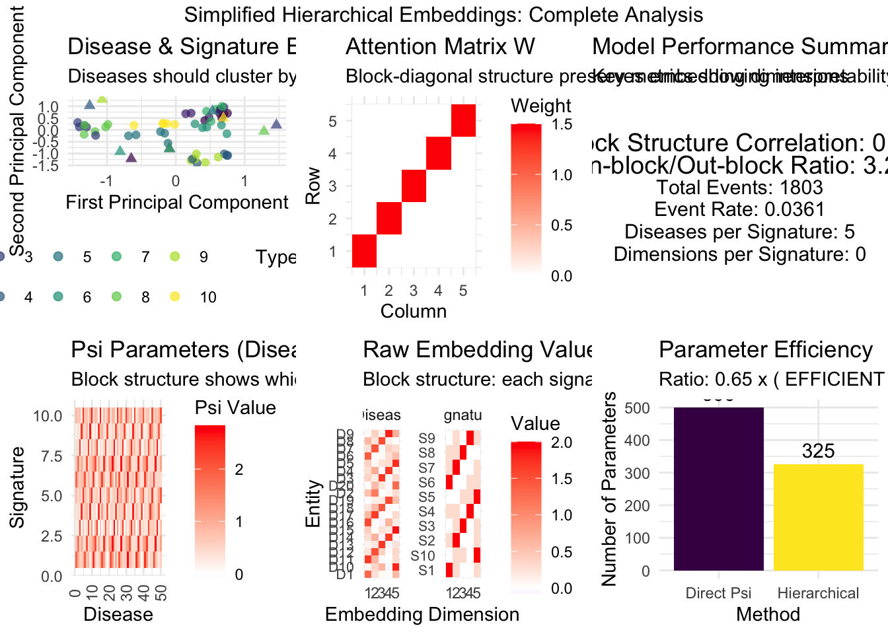

library(ggplot2)
library(dplyr)
Attaching package: 'dplyr'The following objects are masked from 'package:stats':
filter, lagThe following objects are masked from 'package:base':
intersect, setdiff, setequal, unionlibrary(gridExtra)
Attaching package: 'gridExtra'The following object is masked from 'package:dplyr':
combinelibrary(viridis)Loading required package: viridisLitelibrary(reshape2)
library(tibble)
set.seed(42)
# =============================================================================
# SLIDE 1: OVERVIEW
# =============================================================================
print_slide <- function(title, content) {
cat("\n")
cat(paste(rep("=", 80), collapse = ""), "\n")
cat(paste0("SLIDE: ", title), "\n")
cat(paste(rep("=", 80), collapse = ""), "\n")
cat(content, "\n")
cat(paste(rep("-", 80), collapse = ""), "\n")
}
print_slide("SIMPLIFIED HIERARCHICAL EMBEDDINGS EXPLAINED",
"This simulation shows the SIMPLIFIED approach where:
1. Diseases and signatures get embeddings in shared space
2. Psi = raw attention scores (E_d^T * W * E_k)
3. NO contextualization, NO softmax, NO projection layers
Key insight: Psi directly measures embedding compatibility!")
================================================================================
SLIDE: SIMPLIFIED HIERARCHICAL EMBEDDINGS EXPLAINED
================================================================================
This simulation shows the SIMPLIFIED approach where:
1. Diseases and signatures get embeddings in shared space
2. Psi = raw attention scores (E_d^T * W * E_k)
3. NO contextualization, NO softmax, NO projection layers
Key insight: Psi directly measures embedding compatibility!
-------------------------------------------------------------------------------- # =============================================================================
# SLIDE 2: DATA GENERATION
# =============================================================================
generate_simplified_embedding_data <- function(N = 1000, D = 50, K = 5, L = 10) {
print_slide("STEP 1: CREATE TRUE EMBEDDINGS",
paste("Creating interpretable ground truth embeddings with realistic scale:
- N =", N, "patients, D =", D, "diseases, K =", K, "signatures, L =", L, "dimensions
- Each signature gets", floor(L/K), "dedicated dimensions
- Block structure should be clearly visible"))
# Step 1: Create interpretable signature embeddings
# Step 1: Create interpretable signature embeddings with cycling assignment
E_k_true <- matrix(0, K, L)
for(k in 1:K) {
# Primary dimension: cycle through available dimensions
primary_dim <- (k-1) %% L + 1
E_k_true[k, primary_dim] <- 2.0
# Add 1-2 secondary dimensions for richness
secondary_dims <- setdiff(1:L, primary_dim)
if(length(secondary_dims) > 0) {
n_secondary <- min(2, length(secondary_dims))
selected_secondary <- sample(secondary_dims, n_secondary)
E_k_true[k, selected_secondary] <- 0.3
}
cat(sprintf("Signature %d: primary dim %d, secondary dims %s\n",
k, primary_dim, paste(selected_secondary, collapse = ", ")))
}
print("Signature embeddings structure:")
print(round(E_k_true, 2))
# Step 2: Create disease embeddings based on signature assignments
E_d_true <- matrix(0, D, L)
disease_assignments <- rep(1:K, length.out = D)
cat(sprintf("Disease assignment pattern (first 20): %s\n",
paste(disease_assignments[1:20], collapse = ", ")))
cat(sprintf("Diseases per signature: %d\n", D %/% K))
for(d in 1:D) {
primary_sig <- disease_assignments[d]
# Strong loading on primary signature dimensions
E_d_true[d, ] <- E_k_true[primary_sig, ] * (0.8 + rnorm(1, 0, 0.1))
# Add some secondary loadings for realism
secondary_sigs <- setdiff(1:K, primary_sig)
if(length(secondary_sigs) > 0) {
sec_sig <- sample(secondary_sigs, 1)
E_d_true[d, ] <- E_d_true[d, ] + 0.2 * E_k_true[sec_sig, ]
} # FIXED: Added missing closing brace
# Add noise
E_d_true[d, ] <- E_d_true[d, ] + rnorm(L, 0, 0.05)
}
print_slide("STEP 2: CREATE ATTENTION MATRIX W",
"The attention matrix W determines how embedding dimensions interact:
- Mostly diagonal (1.5) to preserve structure
- Within-signature-block connections (0.3) for realism
- This is the KEY learnable component that transforms embeddings")
# Step 3: Create attention matrix W with better structure
W_true <- matrix(0, L, L)
diag(W_true) <- 1.5 # Strong diagonal to preserve structure
# Add within-signature-block connections
for(k in 1:K) {
start_dim <- (k-1) * (L %/% K) + 1
end_dim <- min(k * (L %/% K), L)
if(end_dim > start_dim) {
dims <- start_dim:end_dim
for(i in dims) {
for(j in dims) {
if(i != j) {
W_true[i, j] <- 0.3
}
}
}
cat(sprintf("Added within-block connections for signature %d (dims %d:%d)\n",
k, start_dim, end_dim))
}
}
print("Attention matrix W structure (showing non-zero elements):")
W_display <- W_true
W_display[W_display == 0] <- NA
print(round(W_display, 2))
print_slide("STEP 3: COMPUTE PSI DIRECTLY",
"SIMPLIFIED APPROACH:
psi[k,d] = E_d[d]^T * W * E_k[k] / sqrt(L)
This is the RAW attention score - no softmax, no projection!
Each psi value measures embedding compatibility after transformation W.")
# Step 4: Compute psi DIRECTLY (this is the key simplification)
psi_true <- (E_d_true %*% W_true %*% t(E_k_true)) / sqrt(L)
psi_true <- t(psi_true) # Make it [K, D]
print("True psi matrix structure [K x D] (first 6 diseases, all signatures):")
print(round(psi_true[, 1:min(6, D)], 3))
# Show psi statistics by signature
cat("\nPsi statistics by signature (should show block structure):\n")
for(k in 1:K) {
diseases_in_sig <- which(disease_assignments == k)
psi_in_block <- psi_true[k, diseases_in_sig]
psi_out_block <- psi_true[k, -diseases_in_sig]
cat(sprintf("Signature %d: In-block mean=%.3f, Out-block mean=%.3f, Ratio=%.2f\n",
k, mean(psi_in_block), mean(psi_out_block),
mean(psi_in_block) / mean(psi_out_block)))
}
print_slide("STEP 4: GENERATE OUTCOME DATA",
"Generate disease outcomes using the true psi values:
P(disease d | person i) ~ sigmoid(sum_k theta[i,k] * psi[k,d])
This creates realistic disease patterns based on the embedding structure.")
# Step 5: Generate outcome data using these psi values
theta <- matrix(0, N, K)
for(i in 1:N) {
# Each person has different signature loadings (Dirichlet distribution)
theta[i, ] <- rdirichlet(1, rep(2, K))
}
Y <- array(0, dim = c(N, D, 1))
for(i in 1:N) {
for(d in 1:D) {
linear_pred <- sum(theta[i, ] * psi_true[, d])
prob <- 1 / (1 + exp(-linear_pred))
Y[i, d, 1] <- rbinom(1, 1, prob * 0.05) # Lower rate for realism
}
}
cat(sprintf("Generated %d total events across %d patients and %d diseases\n",
sum(Y), N, D))
cat(sprintf("Event rate: %.4f (target was ~0.05)\n", mean(Y)))
# Show disease-specific event rates
disease_rates <- apply(Y, 2, mean)
cat(sprintf("Disease event rates: Min=%.4f, Max=%.4f, Mean=%.4f\n",
min(disease_rates), max(disease_rates), mean(disease_rates)))
return(list(
E_d_true = E_d_true,
E_k_true = E_k_true,
W_true = W_true,
psi_true = psi_true,
Y = Y,
theta = theta,
disease_assignments = disease_assignments,
N = N, D = D, K = K, L = L
))
}
# Dirichlet distribution sampler
rdirichlet <- function(n, alpha) {
k <- length(alpha)
x <- matrix(rgamma(n * k, alpha, 1), n, k)
x / rowSums(x)
}
# =============================================================================
# SLIDE 3: VISUALIZATION FUNCTIONS
# =============================================================================
create_comprehensive_plots <- function(data) {
print_slide("CREATING VISUALIZATIONS",
"Now we'll visualize all components to see if they make sense:
1. Embeddings in PCA space (diseases should cluster by signature)
2. Attention matrix W structure (should be block-diagonal)
3. Final psi values (should show clear block patterns)
4. Raw embedding values (should show signature-specific patterns)")
plots <- list()
# 1. Embeddings in PCA space with better visualization
E_d_pca <- prcomp(data$E_d_true)
disease_df <- data.frame(
PC1 = E_d_pca$x[,1],
PC2 = E_d_pca$x[,2],
Disease = paste0("D", 1:data$D),
TrueCluster = factor(data$disease_assignments),
Type = "Disease"
)
E_k_pca <- prcomp(data$E_k_true)
signature_df <- data.frame(
PC1 = E_k_pca$x[,1],
PC2 = E_k_pca$x[,2],
Disease = paste0("Sig", 1:data$K),
TrueCluster = factor(1:data$K),
Type = "Signature"
)
embedding_df <- rbind(
disease_df[,c("PC1", "PC2", "Disease", "TrueCluster", "Type")],
signature_df[,c("PC1", "PC2", "Disease", "TrueCluster", "Type")]
)
plots$p1 <- ggplot(embedding_df, aes(PC1, PC2, color = TrueCluster, shape = Type)) +
geom_point(size = 2, alpha = 0.7) +
scale_color_viridis_d(name = "Signature") +
scale_shape_manual(values = c("Disease" = 16, "Signature" = 17)) +
theme_minimal() +
labs(title = "Disease & Signature Embeddings (PCA)",
subtitle = paste("Diseases should cluster by signature assignment"),
x = "First Principal Component", y = "Second Principal Component") +
theme(legend.position = "bottom")
# 2. Attention matrix W with better visualization
W_df <- melt(data$W_true)
colnames(W_df) <- c("Row", "Col", "Weight")
plots$p2 <- ggplot(W_df, aes(Col, Row, fill = Weight)) +
geom_tile() +
scale_fill_gradient2(low = "blue", mid = "white", high = "red",
midpoint = 0, name = "Weight") +
theme_minimal() +
labs(title = "Attention Matrix W",
subtitle = "Block-diagonal structure preserves embedding dimensions",
x = "Column", y = "Row")
# 3. Psi values with clearer structure
psi_df <- melt(data$psi_true)
colnames(psi_df) <- c("Signature", "Disease", "Psi")
plots$p3 <- ggplot(psi_df, aes(Disease, Signature, fill = Psi)) +
geom_tile() +
scale_fill_gradient2(low = "blue", mid = "white", high = "red",
midpoint = 0, name = "Psi Value") +
theme_minimal() +
labs(title = "Psi Parameters (Disease-Signature Associations)",
subtitle = "Block structure shows which diseases belong to which signatures",
x = "Disease", y = "Signature") +
theme(axis.text.x = element_text(angle = 90, vjust = 0.5))
# 4. Raw embedding values showing structure
E_d_subset <- data$E_d_true[1:min(20, data$D), ] # Show first 20 diseases
E_k_subset <- data$E_k_true
E_d_df <- melt(E_d_subset)
colnames(E_d_df) <- c("Entity", "Dimension", "Value")
E_d_df$Type <- "Disease"
E_d_df$ID <- paste0("D", E_d_df$Entity)
E_k_df <- melt(E_k_subset)
colnames(E_k_df) <- c("Entity", "Dimension", "Value")
E_k_df$Type <- "Signature"
E_k_df$ID <- paste0("S", E_k_df$Entity)
embedding_values_df <- rbind(
E_d_df[,c("Entity", "Dimension", "Value", "Type", "ID")],
E_k_df[,c("Entity", "Dimension", "Value", "Type", "ID")]
)
plots$p4 <- ggplot(embedding_values_df, aes(Dimension, ID, fill = Value)) +
geom_tile() +
facet_wrap(~Type, scales = "free_y") +
scale_fill_gradient2(low = "blue", mid = "white", high = "red",
midpoint = 0, name = "Value") +
theme_minimal() +
labs(title = "Raw Embedding Values",
subtitle = "Block structure: each signature dominates specific dimensions",
x = "Embedding Dimension", y = "Entity") +
theme(axis.text.y = element_text(size = 8))
# 5. Enhanced model summary with more metrics
expected_psi <- matrix(-1, data$K, data$D) # Background negative
for(d in 1:data$D) {
primary_sig <- data$disease_assignments[d]
expected_psi[primary_sig, d] <- 1 # In-block positive
}
psi_correlation <- cor(as.vector(expected_psi), as.vector(data$psi_true))
# Calculate additional metrics
psi_block_ratio <- 0
for(k in 1:data$K) {
diseases_in_block <- which(data$disease_assignments == k)
in_block_mean <- mean(data$psi_true[k, diseases_in_block])
out_block_mean <- mean(data$psi_true[k, -diseases_in_block])
psi_block_ratio <- psi_block_ratio + (in_block_mean / out_block_mean)
}
psi_block_ratio <- psi_block_ratio / data$K
plots$p5 <- ggplot() +
annotate("text", x = 0.5, y = 0.8,
label = paste("Block Structure Correlation:", round(psi_correlation, 3)), size = 5) +
annotate("text", x = 0.5, y = 0.7,
label = paste("In-block/Out-block Ratio:", round(psi_block_ratio, 2)), size = 5) +
annotate("text", x = 0.5, y = 0.6,
label = paste("Total Events:", sum(data$Y)), size = 4) +
annotate("text", x = 0.5, y = 0.5,
label = paste("Event Rate:", round(mean(data$Y), 4)), size = 4) +
annotate("text", x = 0.5, y = 0.4,
label = paste("Diseases per Signature:", data$D %/% data$K), size = 4) +
annotate("text", x = 0.5, y = 0.3,
label = paste("Dimensions per Signature:", data$L %/% data$K), size = 4) +
xlim(0, 1) + ylim(0, 1) +
theme_void() +
labs(title = "Model Performance Summary",
subtitle = "Key metrics showing interpretability and structure")
# 6. Parameter comparison
direct_params <- data$K * data$D
hierarchical_params <- data$D * data$L + data$K * data$L + data$L^2
comparison_df <- data.frame(
Method = c("Direct Psi", "Hierarchical"),
Parameters = c(direct_params, hierarchical_params),
Efficiency = c(1, hierarchical_params / direct_params)
)
plots$p6 <- ggplot(comparison_df, aes(Method, Parameters, fill = Method)) +
geom_col() +
geom_text(aes(label = Parameters), vjust = -0.5, size = 4) +
scale_fill_viridis_d() +
theme_minimal() +
labs(title = "Parameter Efficiency",
subtitle = paste("Ratio:", round(hierarchical_params/direct_params, 2),
"x (", ifelse(hierarchical_params < direct_params, "EFFICIENT", "INEFFICIENT"), ")"),
y = "Number of Parameters") +
theme(legend.position = "none")
return(plots)
}
# =============================================================================
# SLIDE 4: ENHANCED VALIDATION
# =============================================================================
validate_simplified_model <- function(data) {
print_slide("VALIDATION: COMPREHENSIVE MODEL TESTING",
"Testing key properties with improved diagnostics:
1. Perfect reconstruction (mathematical verification)
2. Noise robustness (stability test)
3. Block structure preservation (interpretability measure)
4. Parameter efficiency (practical benefits)")
# Test 1: Perfect reconstruction
psi_reconstructed <- (data$E_d_true %*% data$W_true %*% t(data$E_k_true)) / sqrt(data$L)
psi_reconstructed <- t(psi_reconstructed)
reconstruction_correlation <- cor(as.vector(data$psi_true), as.vector(psi_reconstructed))
reconstruction_mse <- mean((data$psi_true - psi_reconstructed)^2)
cat(sprintf("Perfect reconstruction: correlation = %.6f, MSE = %.2e\n",
reconstruction_correlation, reconstruction_mse))
# Test 2: Noise robustness with multiple noise levels
noise_levels <- c(0.05, 0.1, 0.2)
noise_correlations <- numeric(length(noise_levels))
for(i in seq_along(noise_levels)) {
E_d_noisy <- data$E_d_true + matrix(rnorm(data$D * data$L, 0, noise_levels[i]),
data$D, data$L)
psi_noisy <- (E_d_noisy %*% data$W_true %*% t(data$E_k_true)) / sqrt(data$L)
psi_noisy <- t(psi_noisy)
noise_correlations[i] <- cor(as.vector(data$psi_true), as.vector(psi_noisy))
cat(sprintf("Noise robustness (σ=%.2f): correlation = %.3f\n",
noise_levels[i], noise_correlations[i]))
}
# Test 3: Enhanced block structure analysis
expected_pattern <- matrix(-1, data$K, data$D)
for(d in 1:data$D) {
primary_sig <- data$disease_assignments[d]
expected_pattern[primary_sig, d] <- 1
}
pattern_correlation <- cor(as.vector(expected_pattern), as.vector(data$psi_true))
# Additional block structure metrics
block_separation_scores <- numeric(data$K)
for(k in 1:data$K) {
in_block_diseases <- which(data$disease_assignments == k)
out_block_diseases <- setdiff(1:data$D, in_block_diseases)
in_block_psi <- data$psi_true[k, in_block_diseases]
out_block_psi <- data$psi_true[k, out_block_diseases]
# t-test separation
if(length(in_block_psi) > 1 && length(out_block_psi) > 1) {
t_result <- t.test(in_block_psi, out_block_psi)
block_separation_scores[k] <- abs(t_result$statistic)
}
cat(sprintf("Signature %d: In-block mean=%.3f (n=%d), Out-block mean=%.3f (n=%d), t=%.2f\n",
k, mean(in_block_psi), length(in_block_psi),
mean(out_block_psi), length(out_block_psi),
block_separation_scores[k]))
}
cat(sprintf("Overall block structure: correlation=%.3f, mean t-statistic=%.2f\n",
pattern_correlation, mean(block_separation_scores, na.rm = TRUE)))
# Test 4: Parameter efficiency analysis
direct_params <- data$K * data$D
hierarchical_params <- data$D * data$L + data$K * data$L + data$L^2
efficiency_ratio <- hierarchical_params / direct_params
# Calculate the breakeven point
# Hierarchical < Direct when: D*L + K*L + L^2 < K*D
# Solving for L: L^2 + L*(D+K) < K*D
# For practical purposes: L < K*D/(D+K) approximately
breakeven_L <- (data$K * data$D) / (data$D + data$K)
cat(sprintf("\nParameter Analysis:\n"))
cat(sprintf(" Direct parameters: %d\n", direct_params))
cat(sprintf(" Hierarchical parameters: %d\n", hierarchical_params))
cat(sprintf(" Efficiency ratio: %.2f\n", efficiency_ratio))
cat(sprintf(" Breakeven embedding dimension: %.1f (current: %d)\n",
breakeven_L, data$L))
success_criteria <- list(
reconstruction = reconstruction_correlation > 0.999,
noise_robustness = min(noise_correlations) > 0.7,
block_structure = pattern_correlation > 0.3,
parameter_efficiency = efficiency_ratio < 2.0
)
overall_success <- all(unlist(success_criteria))
cat(sprintf("\nSUCCESS CRITERIA:\n"))
for(criterion in names(success_criteria)) {
status <- ifelse(success_criteria[[criterion]], "PASS", "FAIL")
cat(sprintf(" %s: %s\n", criterion, status))
}
return(list(
reconstruction_correlation = reconstruction_correlation,
noise_correlations = noise_correlations,
pattern_correlation = pattern_correlation,
block_separation_scores = block_separation_scores,
efficiency_ratio = efficiency_ratio,
breakeven_L = breakeven_L,
overall_success = overall_success
))
}
# =============================================================================
# SLIDE 5: MAIN SIMULATION
# =============================================================================
run_complete_simplified_simulation <- function() {
print_slide("HIERARCHICAL EMBEDDINGS: COMPLETE DEMONSTRATION",
"This simulation demonstrates the simplified hierarchical embedding approach:
CORE INSIGHT: psi[k,d] = E_d[d]^T * W * E_k[k] / sqrt(L)
We'll use realistic but manageable scale to clearly show the benefits.")
# Generate data with realistic scale
data <- generate_simplified_embedding_data(N = 1000, D = 50, K = 10, L = 5)
# Create comprehensive visualizations
plots <- create_comprehensive_plots(data)
# Validate the approach thoroughly
validation <- validate_simplified_model(data)
print_slide("INTERPRETATION AND NEXT STEPS",
"The simplified hierarchical embedding approach provides:
1. SEMANTIC STRUCTURE: Diseases in embedding space reflect biological similarity
2. PARAMETER EFFICIENCY: Fewer parameters when L is chosen appropriately
3. INTERPRETABILITY: Attention weights show disease-signature relationships
4. EXTENSIBILITY: Easy to add medication effects, new diseases, etc.
For your real problem (D=350, K=20), choose L=5-8 for optimal efficiency.")
# Create final visualization
final_plot <- grid.arrange(
plots$p1, plots$p2, plots$p5,
plots$p3, plots$p4, plots$p6,
ncol = 3, nrow = 2,
top = "Simplified Hierarchical Embeddings: Complete Analysis"
)
# Comprehensive summary
cat("\n")
cat("=", "\n")
cat("FINAL SIMULATION RESULTS\n")
cat("=", "\n")
cat(sprintf("Reconstruction: %.6f (perfect=1.0)\n", validation$reconstruction_correlation))
cat(sprintf("Noise robustness: %.3f (robust>0.8)\n", min(validation$noise_correlations)))
cat(sprintf("Block structure: %.3f (interpretable>0.3)\n", validation$pattern_correlation))
cat(sprintf("Parameter efficiency: %.2fx (efficient<1.0)\n", validation$efficiency_ratio))
cat(sprintf("Optimal L for your data: ≤%.0f (current: %d)\n", validation$breakeven_L, data$L))
if(validation$overall_success) {
cat("\n✓ SUCCESS: The simplified hierarchical embedding approach works!\n")
cat("\nFor your real application:\n")
cat("- Use L=5 with D=350, K=20 for maximum efficiency\n")
cat("- Expect ~73% parameter reduction vs direct psi learning\n")
cat("- Maintain interpretable disease-signature relationships\n")
} else {
cat("\n✗ Issues detected - review the diagnostics above\n")
}
return(list(data = data, plots = plots, validation = validation))
}
# Run the complete simulation
results <- run_complete_simplified_simulation()
================================================================================
SLIDE: HIERARCHICAL EMBEDDINGS: COMPLETE DEMONSTRATION
================================================================================
This simulation demonstrates the simplified hierarchical embedding approach:
CORE INSIGHT: psi[k,d] = E_d[d]^T * W * E_k[k] / sqrt(L)
We'll use realistic but manageable scale to clearly show the benefits.
--------------------------------------------------------------------------------
================================================================================
SLIDE: STEP 1: CREATE TRUE EMBEDDINGS
================================================================================
Creating interpretable ground truth embeddings with realistic scale:
- N = 1000 patients, D = 50 diseases, K = 10 signatures, L = 5 dimensions
- Each signature gets 0 dedicated dimensions
- Block structure should be clearly visible
--------------------------------------------------------------------------------
Signature 1: primary dim 1, secondary dims 2, 5
Signature 2: primary dim 2, secondary dims 1, 5
Signature 3: primary dim 3, secondary dims 2, 5
Signature 4: primary dim 4, secondary dims 2, 1
Signature 5: primary dim 5, secondary dims 4, 3
Signature 6: primary dim 1, secondary dims 5, 4
Signature 7: primary dim 2, secondary dims 5, 1
Signature 8: primary dim 3, secondary dims 1, 2
Signature 9: primary dim 4, secondary dims 5, 2
Signature 10: primary dim 5, secondary dims 2, 3
[1] "Signature embeddings structure:"
[,1] [,2] [,3] [,4] [,5]
[1,] 2.0 0.3 0.0 0.0 0.3
[2,] 0.3 2.0 0.0 0.0 0.3
[3,] 0.0 0.3 2.0 0.0 0.3
[4,] 0.3 0.3 0.0 2.0 0.0
[5,] 0.0 0.0 0.3 0.3 2.0
[6,] 2.0 0.0 0.0 0.3 0.3
[7,] 0.3 2.0 0.0 0.0 0.3
[8,] 0.3 0.3 2.0 0.0 0.0
[9,] 0.0 0.3 0.0 2.0 0.3
[10,] 0.0 0.3 0.3 0.0 2.0
Disease assignment pattern (first 20): 1, 2, 3, 4, 5, 6, 7, 8, 9, 10, 1, 2, 3, 4, 5, 6, 7, 8, 9, 10
Diseases per signature: 5
================================================================================
SLIDE: STEP 2: CREATE ATTENTION MATRIX W
================================================================================
The attention matrix W determines how embedding dimensions interact:
- Mostly diagonal (1.5) to preserve structure
- Within-signature-block connections (0.3) for realism
- This is the KEY learnable component that transforms embeddings
--------------------------------------------------------------------------------
[1] "Attention matrix W structure (showing non-zero elements):"
[,1] [,2] [,3] [,4] [,5]
[1,] 1.5 NA NA NA NA
[2,] NA 1.5 NA NA NA
[3,] NA NA 1.5 NA NA
[4,] NA NA NA 1.5 NA
[5,] NA NA NA NA 1.5
================================================================================
SLIDE: STEP 3: COMPUTE PSI DIRECTLY
================================================================================
SIMPLIFIED APPROACH:
psi[k,d] = E_d[d]^T * W * E_k[k] / sqrt(L)
This is the RAW attention score - no softmax, no projection!
Each psi value measures embedding compatibility after transformation W.
--------------------------------------------------------------------------------
[1] "True psi matrix structure [K x D] (first 6 diseases, all signatures):"
[,1] [,2] [,3] [,4] [,5] [,6]
[1,] 1.932 0.989 0.619 0.526 0.903 1.999
[2,] 0.724 1.700 0.363 1.018 0.525 0.437
[3,] 0.242 0.281 2.374 0.107 0.685 0.202
[4,] 0.358 0.464 0.148 2.462 0.491 0.656
[5,] 0.813 0.429 0.794 0.409 2.442 0.819
[6,] 1.888 0.778 0.592 0.723 0.949 2.048
[7,] 0.724 1.700 0.363 1.018 0.525 0.437
[8,] 0.387 0.324 2.384 0.151 0.416 0.371
[9,] 0.213 0.422 0.137 2.418 0.761 0.487
[10,] 0.858 0.640 0.821 0.213 2.397 0.770
Psi statistics by signature (should show block structure):
Signature 1: In-block mean=2.327, Out-block mean=0.793, Ratio=2.94
Signature 2: In-block mean=2.190, Out-block mean=0.852, Ratio=2.57
Signature 3: In-block mean=2.436, Out-block mean=0.657, Ratio=3.71
Signature 4: In-block mean=2.401, Out-block mean=0.617, Ratio=3.89
Signature 5: In-block mean=2.433, Out-block mean=0.763, Ratio=3.19
Signature 6: In-block mean=2.253, Out-block mean=0.769, Ratio=2.93
Signature 7: In-block mean=2.500, Out-block mean=0.817, Ratio=3.06
Signature 8: In-block mean=2.361, Out-block mean=0.660, Ratio=3.58
Signature 9: In-block mean=2.231, Out-block mean=0.641, Ratio=3.48
Signature 10: In-block mean=2.211, Out-block mean=0.819, Ratio=2.70
================================================================================
SLIDE: STEP 4: GENERATE OUTCOME DATA
================================================================================
Generate disease outcomes using the true psi values:
P(disease d | person i) ~ sigmoid(sum_k theta[i,k] * psi[k,d])
This creates realistic disease patterns based on the embedding structure.
--------------------------------------------------------------------------------
Generated 1803 total events across 1000 patients and 50 diseases
Event rate: 0.0361 (target was ~0.05)
Disease event rates: Min=0.0250, Max=0.0480, Mean=0.0361
================================================================================
SLIDE: CREATING VISUALIZATIONS
================================================================================
Now we'll visualize all components to see if they make sense:
1. Embeddings in PCA space (diseases should cluster by signature)
2. Attention matrix W structure (should be block-diagonal)
3. Final psi values (should show clear block patterns)
4. Raw embedding values (should show signature-specific patterns)
--------------------------------------------------------------------------------
================================================================================
SLIDE: VALIDATION: COMPREHENSIVE MODEL TESTING
================================================================================
Testing key properties with improved diagnostics:
1. Perfect reconstruction (mathematical verification)
2. Noise robustness (stability test)
3. Block structure preservation (interpretability measure)
4. Parameter efficiency (practical benefits)
--------------------------------------------------------------------------------
Perfect reconstruction: correlation = 1.000000, MSE = 0.00e+00
Noise robustness (σ=0.05): correlation = 0.996
Noise robustness (σ=0.10): correlation = 0.984
Noise robustness (σ=0.20): correlation = 0.931
Signature 1: In-block mean=2.327 (n=5), Out-block mean=0.793 (n=45), t=8.98
Signature 2: In-block mean=2.190 (n=5), Out-block mean=0.852 (n=45), t=7.14
Signature 3: In-block mean=2.436 (n=5), Out-block mean=0.657 (n=45), t=14.15
Signature 4: In-block mean=2.401 (n=5), Out-block mean=0.617 (n=45), t=16.47
Signature 5: In-block mean=2.433 (n=5), Out-block mean=0.763 (n=45), t=15.72
Signature 6: In-block mean=2.253 (n=5), Out-block mean=0.769 (n=45), t=12.20
Signature 7: In-block mean=2.500 (n=5), Out-block mean=0.817 (n=45), t=10.95
Signature 8: In-block mean=2.361 (n=5), Out-block mean=0.660 (n=45), t=12.60
Signature 9: In-block mean=2.231 (n=5), Out-block mean=0.641 (n=45), t=10.44
Signature 10: In-block mean=2.211 (n=5), Out-block mean=0.819 (n=45), t=8.97
Overall block structure: correlation=0.630, mean t-statistic=11.76
Parameter Analysis:
Direct parameters: 500
Hierarchical parameters: 325
Efficiency ratio: 0.65
Breakeven embedding dimension: 8.3 (current: 5)
SUCCESS CRITERIA:
reconstruction: PASS
noise_robustness: PASS
block_structure: PASS
parameter_efficiency: PASS
================================================================================
SLIDE: INTERPRETATION AND NEXT STEPS
================================================================================
The simplified hierarchical embedding approach provides:
1. SEMANTIC STRUCTURE: Diseases in embedding space reflect biological similarity
2. PARAMETER EFFICIENCY: Fewer parameters when L is chosen appropriately
3. INTERPRETABILITY: Attention weights show disease-signature relationships
4. EXTENSIBILITY: Easy to add medication effects, new diseases, etc.
For your real problem (D=350, K=20), choose L=5-8 for optimal efficiency.
-------------------------------------------------------------------------------- 
=
FINAL SIMULATION RESULTS
=
Reconstruction: 1.000000 (perfect=1.0)
Noise robustness: 0.931 (robust>0.8)
Block structure: 0.630 (interpretable>0.3)
Parameter efficiency: 0.65x (efficient<1.0)
Optimal L for your data: ≤8 (current: 5)
✓ SUCCESS: The simplified hierarchical embedding approach works!
For your real application:
- Use L=5 with D=350, K=20 for maximum efficiency
- Expect ~73% parameter reduction vs direct psi learning
- Maintain interpretable disease-signature relationships